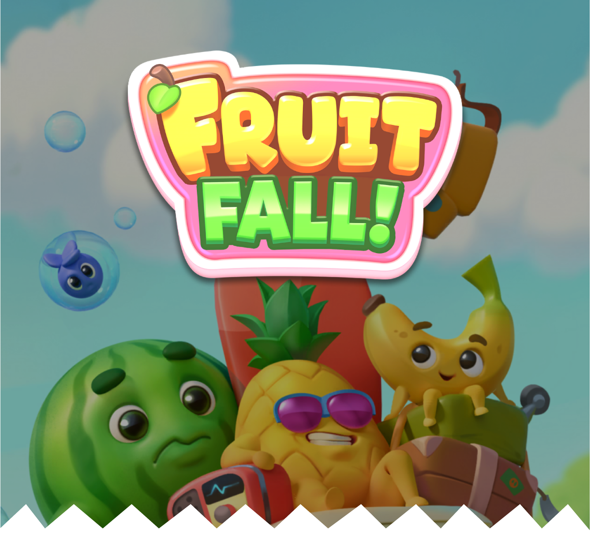
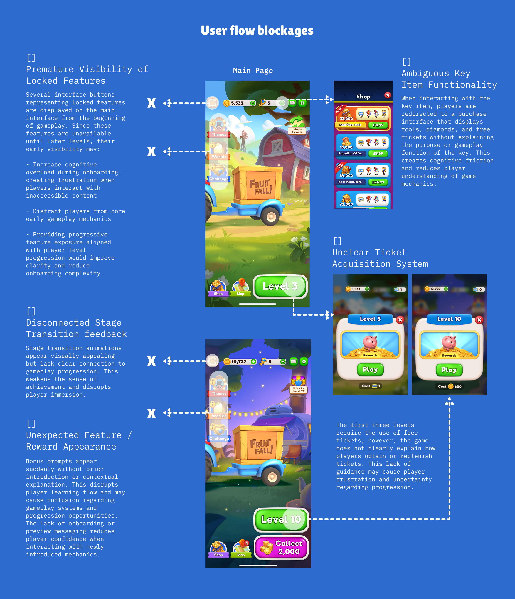
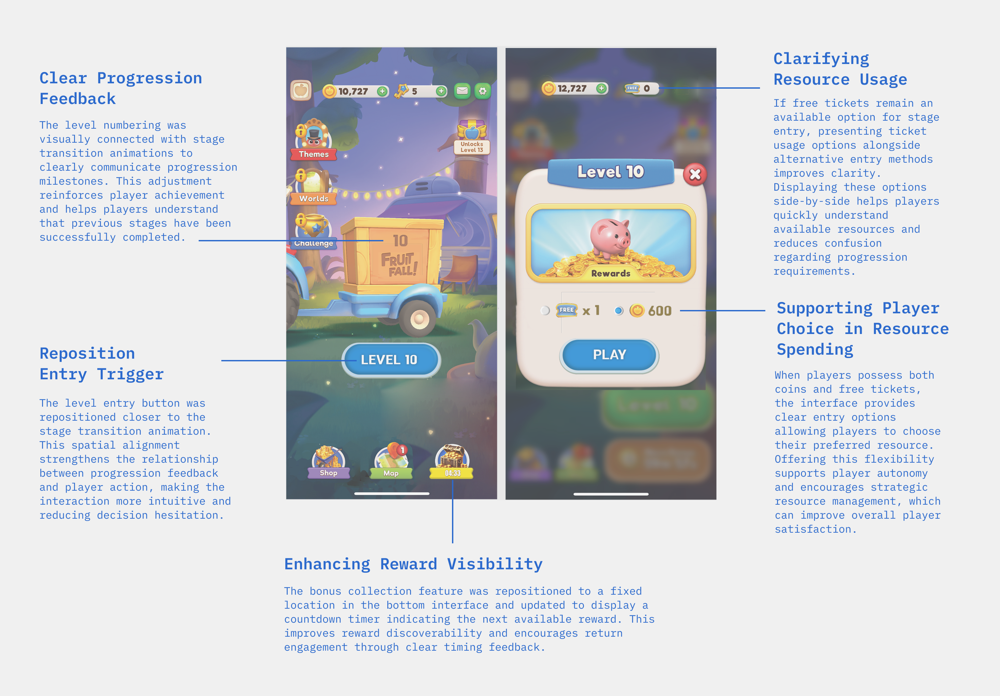
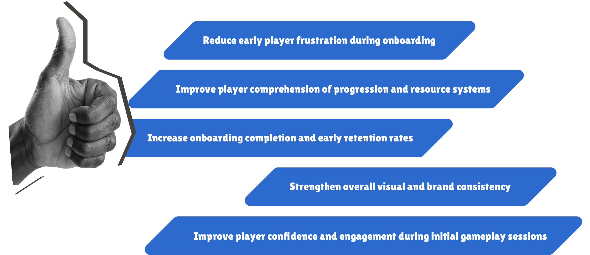
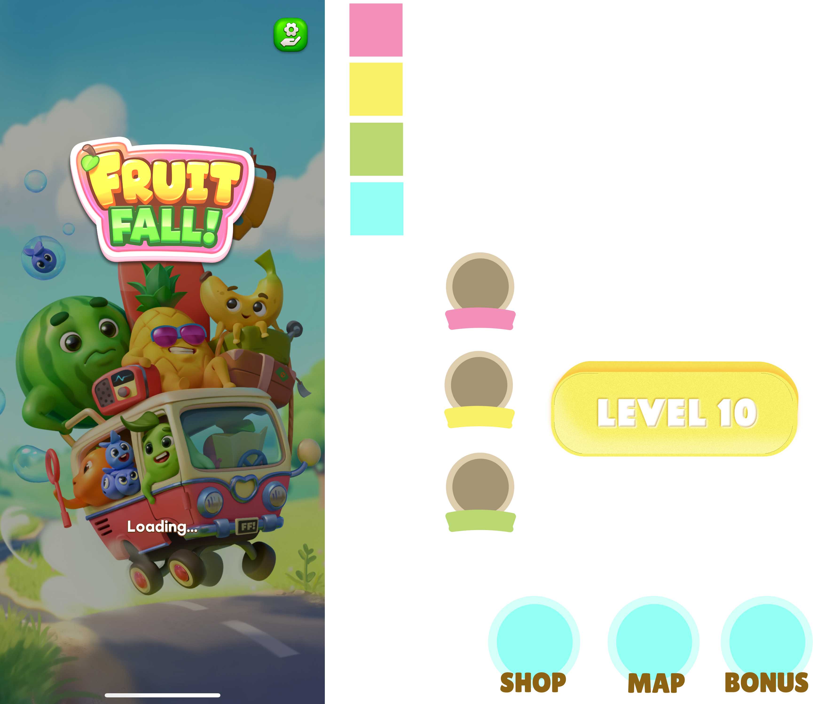

Fruitfall! is a soft launched casual mobile game in the UK. For Fruitfall!, I structured my UX improvement strategy into short-term optimization and long-term experience sustainability goals. The short-term focus would involve user research and iterative design adjustments to resolve the identified onboarding and usability issues. These efforts are intended to improve player understanding of core mechanics, reduce early-game frustration, and strengthen initial player retention. The long-term objective is to develop a unified UI design system that ensures visual consistency between gameplay interfaces and external marketing materials. Establishing a scalable and cohesive visual language would improve brand recognition and support efficient future content expansion.


- Redesign interface layout to improve clarity between navigation elements
- Differentiate bottom navigation menu buttons from left-side list or secondary menu buttons through visual hierarchy and interaction cues
- Improve icon clarity and labeling to reduce misclicks and confusion
- Introduce onboarding prompts explaining how free tickets are earned and used
- Provide contextual tooltips or micro-interactions explaining the purpose of keys before redirecting players to purchase or usage interfaces
- Add resource tracking visibility within the main gameplay HUD
- Align stage transition animations with gameplay milestones
- Introduce clearer visual or narrative indicators linking level completion with stage advancement
- Reinforce player achievement through stronger reward and progression feedback



The current UI visual style differs between marketing assets (such as the game cover) and in-game interface components. Establishing a unified visual system would improve brand consistency and player expectation alignment.
Potential improvements include:
- Standardizing typography and color palette usage
- Aligning iconography and illustration style across
promotional and gameplay interfaces
- Creating cohesive UI component guidelines for
long-term scalability
Copyright © 2026 Zowie Tseng. All rights reserved.